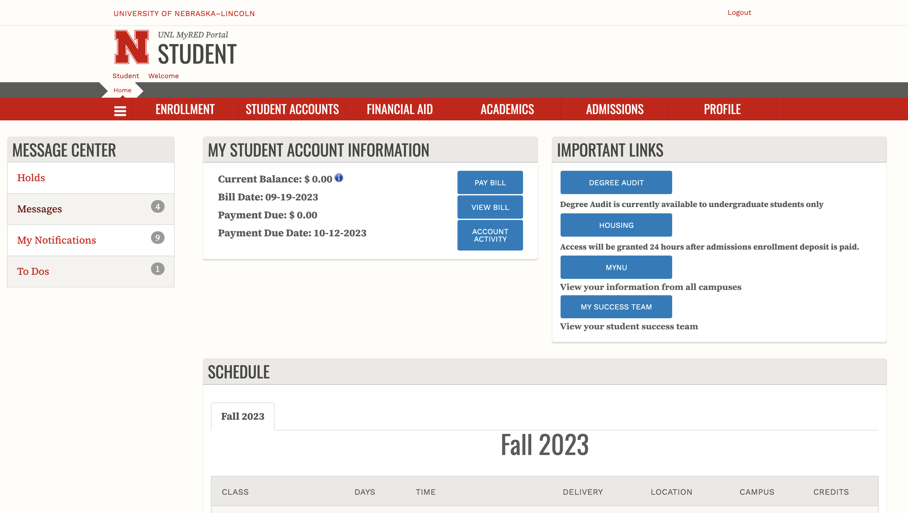

#DirectedAnalysis
Design Systems
Typography is pivotal in design, often making up to 90% of a screen's content. When selecting typefaces, it's vital to balance brand identity, on-screen clarity, and performance, sometimes opting for system-native fonts for speed. The choice of font weights and styles should focus on clear hierarchies, minimizing variations for efficiency. Font sizes and line-heights, typically starting with a 1.5x ratio, are intertwined and play a role in the design's overall grid, needing adaptability across devices. It's essential to encode these typographic elements systematically for ease of maintenance and responsiveness.
MyRed's user interface (UI) is a good example of effective typography in web design. The platform establishes a clear typographical hierarchy, with each section introduced by well-proportioned headers. Notably, these headers utilize a readable typeface that contrasts with the content typeface, effectively distinguishing between headers and content for improved clarity and emphasis. The content itself employs another readable typeface, ensuring legibility. Furthermore, MyRed's typography is adaptable, showing consistent responsiveness across different device sizes. In essence, MyRed's design balances aesthetics with user-centric functionality through its thoughtful typographical choices.
“Design Systems Typography Guide.” DesignSystems.Com, www.designsystems.com/typography-guides/. Accessed 19 Sept. 2023.